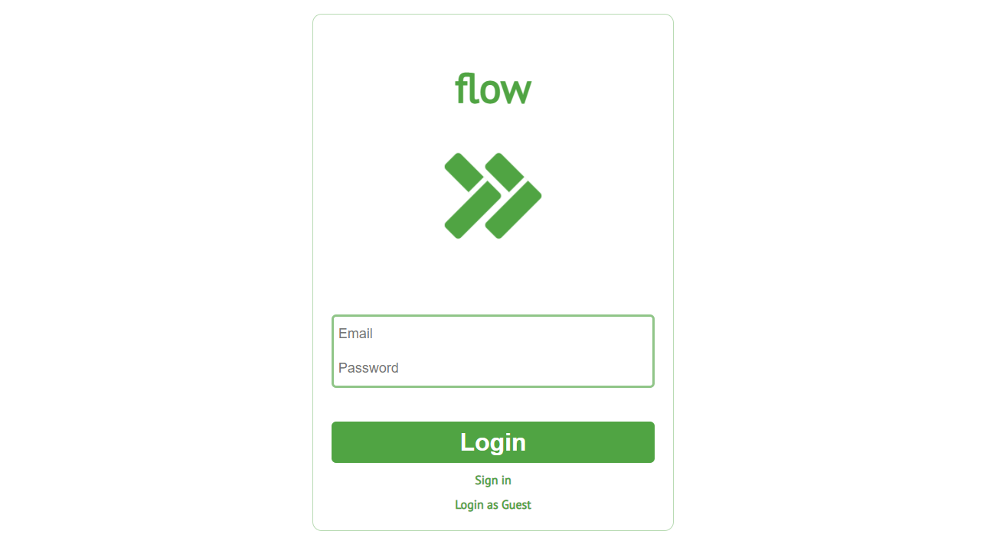
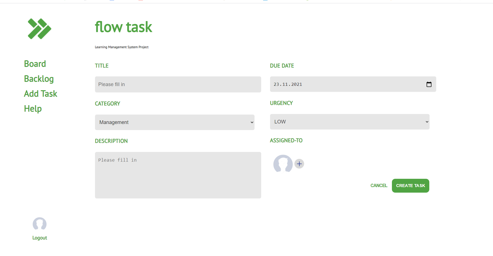
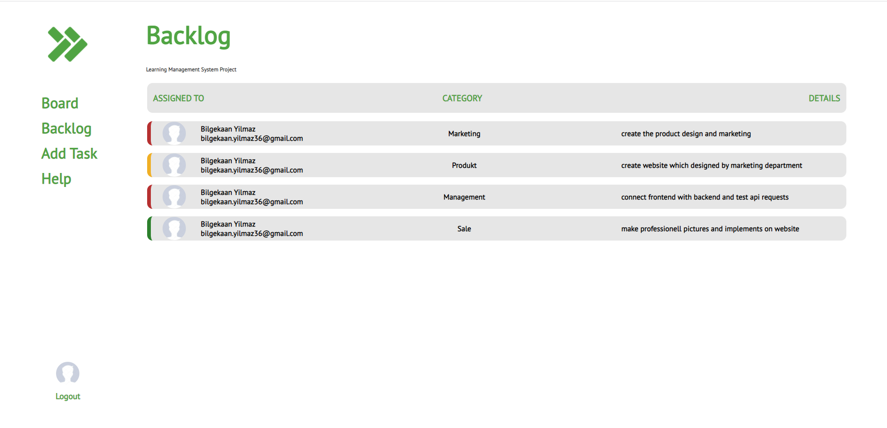

<div class="container">
    <div class="wrapper">
        
        <div class="header">
            <h3>flow</h3>
            <p>Einfaches KanBan Projekt welches die Grundfunktion wie z.B. Login, Backlog, Userboard usw enthält. </p>
        </div>
        <div class="projectbox">
            <div #image1 class="image-1"></div>
            <div #image2 class="image-2"></div>
            <div #image3 class="image-3"></div>
            <div class="next" (click)="nextImg()">
                
            </div>
            <div class="prev" (click)="prevImg()">
                
            </div>
        </div>
        <div class="buttons">
            <button (click)="showImg1()"></button>
            <button (click)="showImg2()"></button>
            <button (click)="showImg3()"></button>
        </div>
        <div class="text">
            <div class="section">
                <h2>About this project</h2>
                <hr>
                <p>Ich habe mit diesem Projekt während meiner Weiterbildung zum Frontend Webentwickler angefangen. Meine
                    Aufgabe sowie Ziel war es eine praktische sowie simple KanBan Application zu bauen.
                    Dieses KanBan soll die Benutzer von der Projektidee bis zum fertigen Produkt begleiten und stets
                    unterstützen. Es hat ein schlichtes Design und ist somit sehr übersichtlich.</p>
            </div>
            <div class="section">
                <h2>Technical Sheet</h2>
                <h3>Code technologies I got involved with while working on this project.</h3>
                <hr>
                <ul>
                    <li>HTML5</li>
                    <li>CSS3</li>
                    <li>VanillaJS</li>

                </ul>
            </div>
            <div class="section">
                <h2>Resources</h2>
                <hr>
                <ul>
                    <li>The project is online at http://......</li>
                    <li>Access the project's source on <a href="#">GITHUB</a></li>
                </ul>
            </div>
        </div>
    </div>
</div>